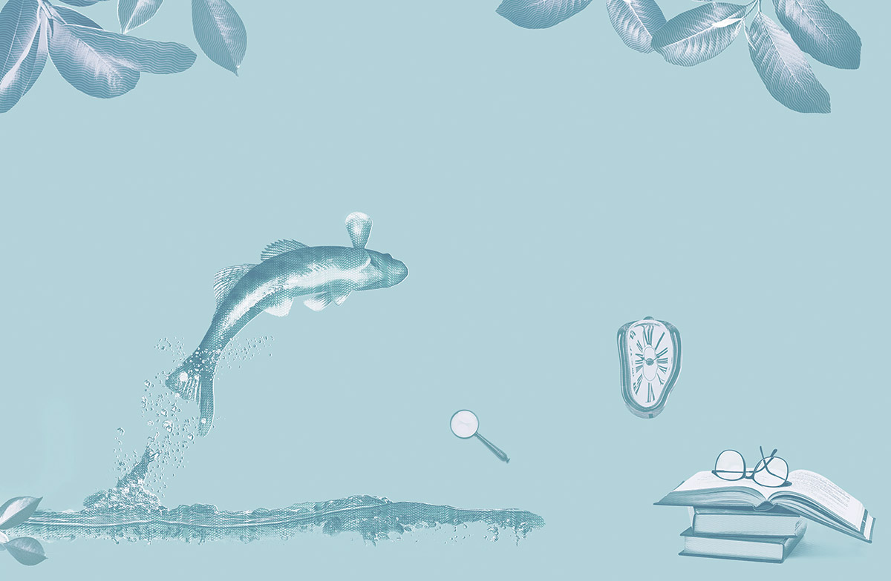

1993년 『작가세계』 여름호에 시를 발표하고, 1994년 장편소설 『가면을 가리키며 걷기』로 제3회 작가세계문학상을 수상하며 본격적인 작품활동을 시작했다. 장편소설 『꾿빠이, 이상』, 소설집 『내가 아직 아이였을 때』, 단편소설 「달로 간 코미디언」, 「산책하는 이들의 다섯 가지 즐거움」 이 외에도 『서경석 다시 읽기』 (공저), 『일곱 해의 마지막』, 『이토록 평범한 미래』, 『시절일기』 등 다수의 책을 출간하며 작품활동을 하고 있다.
글. 김연수
스무 살이라면 앞날이 창창하다고들 말할 것이다. 사람의 일생을 여든 살로 본다면, 이제 1쿼터가 끝난 셈이니까. 1쿼터는 정말 느리게 지나갔다.
그녀를 만나기 전, 나는 열아홉 살이었고 대학교에 막 입학했으며 뭔가를 간절하게 그리워하고 있었다. 맞다. 그녀를 만나기 전부터 나는 그녀를 그리워했다.
“당신의 삶에서 아직 존재하지 않는 미래의 누군가를, 만나기도 전에 그리워하는 게 가능한가요?”
닥터가 내게 물었다. 그는 뭔가에 빠지는 사람들을 연구하고 있었다. 전문가이므로 그는 내 대답을 이미 알고 있었다.
“물론입니다. 그리움은 지금 우리가 강의 바깥에 있다는 것을 말해주니까요.”
삶은 강물과 같다. 양쪽에는 둑이 있다. 나는 그 둑에서 강을 바라본다. 강은 시작 지점에서 끝까지 한 눈에 들어온다. 강 전체를 봤기에 나는 그녀를 보자마자 강으로 뛰어든다. 나는 이게 처음이 아니라는 것도 알고 있다. 하지만 강물에 젖는 순간, 나는 그 모든 것을 잊어버렸다.
닥터는 뭔가에 빠져든 사람들에게 다음과 같은 일들이 일어난다고 내게 설명했다.
첫째, 자율신경의 활성화. 갓 태어난 아이가 숨을 쉬는 건 아이의 의지가 아니라 자율신경이 활성화됐기 때문이다. 아이는 태어나기 전부터 숨을 쉬어온 사람처럼 아무런 준비 없이 완벽하게 첫 숨을 내쉰다. 마찬가지로 어떤 사람들은 마치 그러기로 약속돼 있던 것처럼 뭔가에 빠져든다.
둘째, 새로운 감각의 생성. 뭔가에 빠져들고 나면 그들에게는 새로운 눈과 귀와 코와 입과 손이 만들어진다. 그들에게는 그들만의 감각이 생긴다. 그 감각들로 그들은 새로운 세계를 만든다. 이 세상에는 다른 사람들의 눈에는 보이지 않는, 빠져든 사람들만의 세계가 수없이 많다.
셋째, 시간에 대한 착각. 돋보기가 햇빛을 하나의 점에 모으듯 빠져드는 일은 우리의 일생을 지금 이 순간에 집중시킨다. 더 많은 시간이 집중되면서 지금 이 순간은 한없이 늘어난다. 그 효과로 그들은 엿가락처럼 늘어진 현재가 차츰 굳어가는 것을 경험한다.
“사랑하는 동안 당신은 1아토초보다는 짧고 1플랑크시간보다는 긴 현재를 경험했습니다.”
닥터는 단언했다. 그의 설명에 따르면, 1아토초는 10-18초이고 1플랑크시간은 10-43초다.
“모든 게 끝나가고 있으니 가능하면 알아듣기 쉽게 설명해주세요.”
내 말에 닥터는 손목시계를 바라보며 말했다.
“1초. 방금 1초가 지나갔습니다. 1아토초가 1초라고 가정해봅시다. 그렇다면 원래의 1초는 우주의 나이만큼
긴 시간이 됩니다. 사랑에 빠져 있는 동안 당신은 거의 영원에 가까울 정도로 긴 1초를 경험했습니다. 몰입을 연구하는 우리에게 당신은 매우 소중한 사례입니다.”
“뭐가 뭔지 도통 모르겠습니다.”
“당연히 혼란스럽겠죠. 지금 당신은 죽어가고 있습니다. 그것도 아주 빠른 속도로. 뭔가에 빠져들었다가
현실로 복귀한 사람들에게 이런 일은 흔하지만,
그중에서도 당신의 사례는 상상할 수 없을 정도입니다. 당신은 인류 역사상 가장 긴, 그러니까 우주의 나이만큼
긴 1초를 경험한 것으로 보입니다.”
“저는 다만 한 여자를 사랑했고, 그 사랑이 끝났을 뿐입니다.”
“그 사랑에 완전히 빠져 있었기 때문에 1초는 한없이
길어진 것입니다. 우리의 1초가 당신에게는 그토록
긴 시간으로 느껴졌다면 그때 당신은 1아토초보다는 짧고 1플랑크시간보다는 긴 현재를 경험하고 있었다는 뜻입니다. 시간은 상대적으로 흐르니까요. 빠져 있을 때, 당신에게는 지금 이 순간뿐이었습니다. 그 다음은 영원입니다. 지금 이 순간이 영원이 될 때, 인류에게 더이상 죽음은 없습니다.”
“저는 영원한 삶을 바라지 않습니다. 지금 이 순간의 삶만 바랄 뿐이었습니다.”
“그건 같은 말입니다.”
“그러나 이제는 모든 게 끝났습니다. 지금 저는 영문도 모르고 강물 밖으로 쫓겨난 물고기와 같습니다.”
내가 눈물을 흘리자 닥터는 더 이상 나를 설득하려고 하지 않았다.
“지금 당신은 강물 밖의 물고기와 같군요.”
그리고 지금 나는 언젠가처럼 뭔가를 간절하게
그리워하고 있다.
“당신은 지금 급속히 노화되고 있습니다. 빠져들 대상을 잃어버린 사람들에게 흔히 나타나는 부작용이죠.”
닥터는 전문가다. 그는 어떤 것에 깊이 빠져든 사람들을 통해 인류를 구원하는 방법을 연구하고 있다. 그러니 닥터의 말을 믿어야만 한다.
“이것은 시간의 흐름을 잊을 정도로 빠져든 사랑의 결과입니다. 후회하나요?”
나는 고개를 저었다.
내 일생의 2, 3, 4쿼터는 순식간에 지나갔다. 나는 내 몫의 숨을 한 번에 내쉬었다. 결국 나는 예정대로 여든 살을 채우고 죽었지만, 사람들은 내가 실연의 아픔으로 스무 살에 요절했다고들 말했다.
